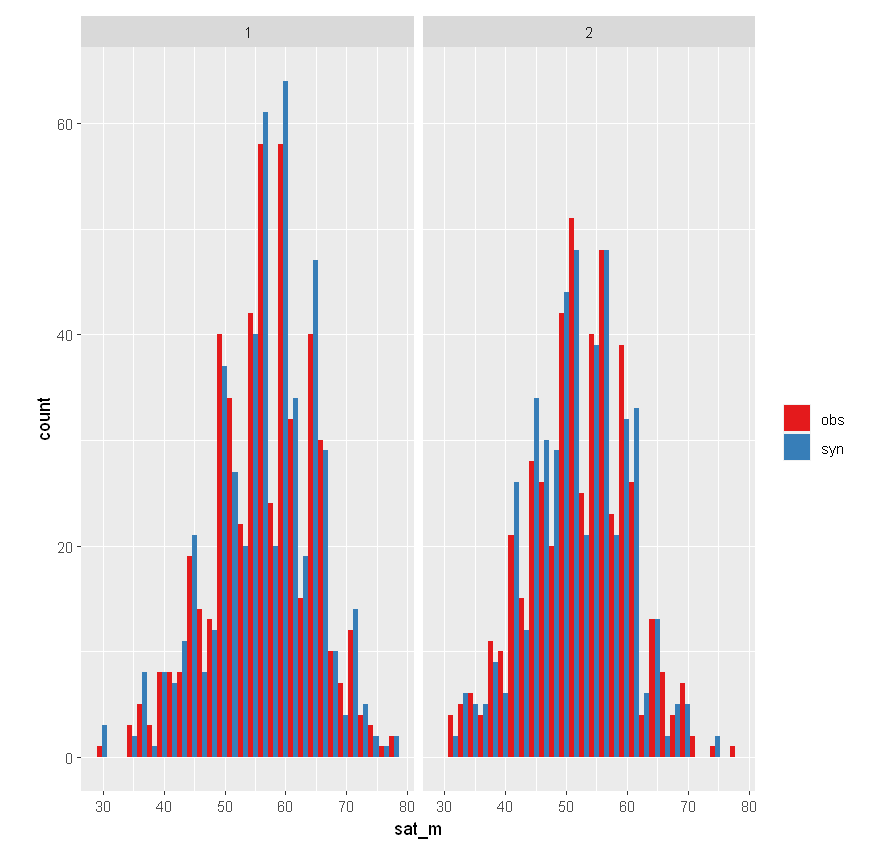
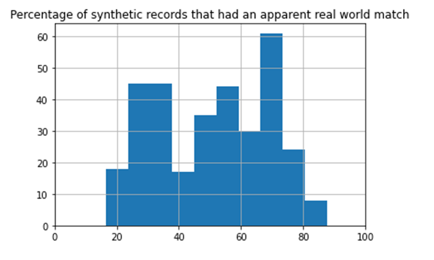
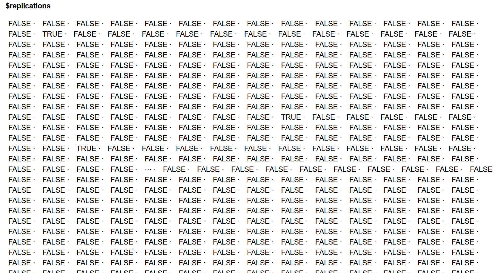

HLG-MOS Synthetic Data Challenge Information
Package
This guide outlines the HLG-MOS Synthetic Data Challenge. It includes the steps and
tasks of the challenge along with documentation to aid in the tasks. It also outlines the deliverables and
provides instructions on how to communicate with experts and submit your deliverables.
Challenge
Evaluate a broad set of data sets, methods and synthesizers for typical use cases
of disseminated microdata. Credit is given for each instance (combination of data and synthesis method) evaluated.
Getting Help
Recommended Reading from Synthetic Data for NSOs: A
Starter Guide
- Choose one of the two data sets for
your “original”data.
- Choose a synthesis technique and tune
parameters as desired.
- Evaluate the utility and privacy of your
resulting synthetic data set.
- Repeat steps 1 through 3 for
any additional synthesis methods or datasets.
- Evaluation of Synthetic
Instances
- Evaluation of the HLG-MOS Synthetic Data
for National Statistical Organizations: A Starter
Guide
- Presentation to Senior
Management
Slack Channel
Communications from challenge organizers, video submission, and Q&As
will take place on the HLG-MOS
Synthetic Data Slack channel.
Getting Help
Experts will be available at the following times to answer your questions in
person. Your experts for the challenge are the following.
|
Name
|
Affiliation
|
Expertise
|
|
Geoffrey Brent
|
Australian Bureau of Statistics
|
Microsimulation / agent-based simulation
|
|
Joerg Drechsler
|
Institute for Employment Research
|
Fully conditional specification
|
|
Christine Task
|
Knexus Research
|
Fully conditional specification
|
|
Ioannis Kaloskampis
|
Office of National Statistics
|
GANs, differential privacy
|
|
Jecy Yu
|
Statistics Canada
|
Fully conditional specification, R
|
|
Alistair Ramsden
|
Statistics New Zealand
|
Applied confidentiality / statistical disclosure control best practice
(especially in the NZ context), which includes generation and testing of synthetic data
|
|
Manel Slokom
|
TU Delft
|
Fully conditional specification, deep learning
|
|
Gillian Raab
|
University of Edinburgh, Scotland
|
Fully conditional specification, synthpop
|
Office hours are scheduled for the following dates and times. Click on the
expert’s name for the meeting link for their office hour.
You can also ask questions of the experts and fellow participants in
the #question Slack channel.
Challenge Instructions
You and your team are from a National Statistical Organization (NSO). Your
organization has a data holding that is valuable to your many users and stakeholders, so you are tasked with
providing these users with microdata that meets the high confidentiality standards of your NSO. You decide that
synthetic data is the best method to achieve your goal.
Your stakeholders are interested in using the data holding for the following
purposes:
1. Testing their
own specific analysis and models (testing analysis)
2. Teaching
students and new learners the latest in data science methods (education)
3. Testing complex
systems that have been built to transform your data holding into another product (testing
technology)
4. The uses are
unknown (releasing microdata to the public)
You need to explore the common synthetic data generation methods and communicate
to your senior managers by using appropriate disclosure and utility evaluations, focusing on whether and how
suitable your synthetic data is for each use case noted above.
Remember: The more methods, data, and tools you try, the more points you get.
Please refer to HLG-MOS
Synthetic Data for National Statistical Organizations: A Starter Guide to help you with your task.
Recommended Reading from
Synthetic
Data for NSOs: A Starter Guide
The starter guide provides a holistic view of synthetic data and provides options
and recommendations for organizations producing synthetic data. Reading the entire guide will help you earn top
marks.However, the challenge can be completed by reading the following:
- Chapter 2: Use Cases (all pages)
- Chapter 3: Methods (pages 17-21, 23-25, 28-32)
- Chapter 4: Disclosure Risk (pages 33, 40-52)
- Chapter 5: Utility Measures (all pages)
Steps to Complete One Synthesis Exploration
Instance
1. Choose one of the two data sets for your
“original” data.
We have provided you with your “original” data. You can choose between a
toy option and an option that is more realistic, depending on your level of expertise and how much time you have.
We encourage you to try both data sets.
- satgpa
data set: This data set includes SEX, SAT score
(Standardized Admissions Test for universities in the United States), and GPA (university grade point average)
data for 1000 students at an unnamed college.
- ACS
data set (csv format): For a real-world example of detailed demographic survey
data, try using the American Community Survey (more
details and the data dictionary are available here). Note that this data set has
more features (33) and will generally require longer computation time for synthesis and evaluation. Participants
are welcome to explore partial synthesis (synthesizing only some variables) in addition to full synthesis
(synthesizing all variables).
2. Choose a synthesis technique and tune
parameters as desired.
Chapter 3 of the HLG-MOS
Synthetic Data for National Statistical Organizations: A Starter Guide will
help you explore the different methods to generate synthetic data. The recommendations in this chapter will help
you understand how these methods are suitable for different use cases and can help you with your communication to
senior managers.
You are welcome to use a synthesizer (or several synthesizers) of your choice or
from the guide. We provide optional instructions and guidance for exploring parameter
options (tuning) to improve utility/privacy for specified methods for each data set.
|
Select Synthesis Tools with Quickstart Guidance
|
Quickstart Tech Guide
|
|
CART with R-synthpop:
RSynthpop (library website)
|
synthpop, a package for R, provides routines for generating synthetic data and
evaluating the utility and privacy of that synthesis. Both parametric and nonparametric synthesis
techniques are available in synthpop syn.
|
Quickstart guidance for satgpa
data CART
Quickstart guidance for ACS
data CART
|
|
DP-pgm (Minutemen):
Discussion
and walk-through (video), adaptive
granularity method by Minutemen (github repo)
|
A top solution to the 2021
NIST synthesizer model challenge, by Ryan McKenna and the Minuteman team. This
technique is based on probabilistic graphical models and is best suited for categorical and discrete
features. The linked implementation has been extended to arbitrary data sets and has not been specifically
tuned for ACS data. This approach satisfies differential privacy metrics.
|
Quickstart guidance for DP-pgm
(Minutemen)
|
|
DPSyn
|
The 4th place solution from the ACS sprint of the 2021
NIST synthesizer model challenge, by the DPSyn team, is based on a combination
of marginal and sampling methods. This synthesizer has been specifically trained using the ACS IL/OH
data (and thus does not provide formal privacy for hackathon purposes), but it runs quickly and has a good
privacy score on informal privacy metrics.
|
Quickstart guidance for DPSyn
|
Other tools from the guide include the following.
Got code or a synthesizer you want to share? Add it to the table!
3. Evaluate the utility and privacy of your resulting synthetic data
set.
Chapters 4 and 5 of HLG-MOS
Synthetic Data for National Statistical Organizations: A Starter Guide present
disclosure considerations and utility measures, respectively, for you to evaluate the suitability for your
synthetic data to the use cases of your stakeholders.
You are welcome to use any utility and disclosure risk measures of your choosing.
The synthpop and the
SDNist code suggested above provide built-in utility and
disclosure measures.
- Utility Evaluation
- Privacy Evaluation
4. Repeat steps 1 through 3 for any additional
synthesis methods or data sets.
Deliverables
There are three expected deliverables for this challenge.
1. Evaluation of Synthetic Instances
Think about the results, and for each of the four use cases in the guide, write
whether you think the synthesis technique applied to that data, with those utility and privacy results,
would produce a suitable result for that use case.
You receive more points for the more methods, data sets, and use cases you
evaluate.
In your response, please outline a justification for each of the following:
- the method and method category (for example, sequential modeling,
deep learning) you used
- whether or not you used any specific tools to generate your
synthetic data
- how you evaluated your data (explain any specific measures and
their results)
You will have more success if you complete this table for both the toy and
realistic data sets. You can receive bonus marks for the following:
- creating both a fully synthetic and a partially synthetic
file
- demonstrating evidence of tuning (adjusting model parameters to
improve performance)
2. Evaluation of HLG-MOS Synthetic Data for
National Statistical Organizations: A Starter Guide
- Did you find the guide useful for generating synthetic
data? If so, what aspects were the most useful?
- Did you find the guide useful for evaluating the utility
and disclosure of the synthetic data? If so, what aspects were most useful?
- Were there any parts of the guide that were unclear or
misleading?
- Did you encounter an aspect of the synthetic data
generation or evaluation process that was missing from the guide that you would
like to propose a modification for?
3. Presentation to Senior Management
Record a 5-minute presentation, reporting your findings from Part 1 and
informing senior managers of your organization that the synthetic data you generated is suitable (or unsuitable)
to be used for each of the use cases you considered.
For this challenge, the senior managers are Anders Holmberg from the
Australian Bureau of Statistics and Joost Huurman from Statistics Netherlands, both representatives of the HLG-MOS
Executive Board.
Your videos will be judged on their clarity and the appropriateness of the
techniques (methods, utility and privacy measures) applied, as well as the difficulty of the chosen example.
How to Submit Your Responses
- For deliverables 1 and 2: Evaluation of synthetic data methods for
stakeholder use cases and your evaluation of the HLG-MOS synthetic data guide,
please submit your answers to your team’s folder here: HLG-MOS
Synthetic Data Challenge Submissions Folder.
- For deliverable 3: Upload your senior management
presentations in both the HLG-MOS Synthetic Data Challenge Submissions Folder and the #submit-deliverables Slack
channel.
- We suggest you record a virtual meeting on the platform of
your choice and upload the file.
Thank You!
A big “thank you” to Christine Task and Mary Wall from Knexus Research
and the NIST and Sarus teams for helping put this challenge together.
ACS Dataset Details
The main data set includes survey data, including demographic and financial
features, representing a subset of data from the Integrated Public Use Microdata Series (IPUMS) of the American
Community Survey for Ohio and Illinois from 2012 through 2018. The data includes a large feature set of
quantitative survey variables along with simulated individuals (with a sequence of records across years), time
segments (years), and map segments (Public Use Microdata Areas, PUMAs). Solutions in this sprint must include a
list of records (i.e., synthetic data) with corresponding time/map segments.
There are 36 total columns in the ground truth data, consisting of PUMA, YEAR, 33
additional survey features, and an ID denoting simulated individuals.
Here is what an example row of the
ground_truth.csv data looks like:
|
|
|
|
PUMA
|
17-1001
|
|
YEAR
|
2012
|
|
HHWT
|
30
|
|
GQ
|
1
|
|
PERWT
|
34
|
|
SEX
|
1
|
|
AGE
|
49
|
|
MARST
|
1
|
|
RACE
|
1
|
|
HISPAN
|
0
|
|
CITIZEN
|
0
|
|
SPEAKENG
|
3
|
|
HCOVANY
|
2
|
|
HCOVPRIV
|
2
|
|
HINSEMP
|
2
|
|
HINSCAID
|
1
|
|
HINSCARE
|
1
|
|
EDUC
|
7
|
|
EMPSTAT
|
1
|
|
EMPSTATD
|
10
|
|
LABFORCE
|
2
|
|
WRKLSTWK
|
2
|
|
ABSENT
|
4
|
|
LOOKING
|
3
|
|
AVAILBLE
|
5
|
|
WRKRECAL
|
3
|
|
WORKEDYR
|
3
|
|
INCTOT
|
10000
|
|
INCWAGE
|
10000
|
|
INCWELFR
|
0
|
|
INCINVST
|
0
|
|
INCEARN
|
10000
|
|
POVERTY
|
36
|
|
DEPARTS
|
1205
|
|
ARRIVES
|
1224
|
|
Sim_individual_id
[deprecated; see note below]
|
1947
|
The columns are as follows:
- PUMA (str) — Identifies the PUMA where the housing
unit is located.
- YEAR (uint32) — Reports the four-digit year when the
household was enumerated or included in the survey.
- HHWT (float) — Indicates how many households in the
U.S. population are represented by a given household in an IPUMS sample.
- GQ (uint8) — Classifies all housing units into one of
three main categories: households, group quarters, or vacant units.
- PERWT (float) — Indicates how many people in the U.S.
population are represented by a given person in an IPUMS sample.
- SEX (uint8) — Reports whether the person is male or
female.
- AGE (uint8) — Reports the person's age in years
as of the last birthday.
- MARST (uint8) — Gives each person's current
marital status.
- RACE (uint8) — Reports what race the person considers
himself/herself to be.
- HISPAN (uint8) — Identifies people of
Hispanic/Spanish/Latino origin and classifies them according to their country of origin when possible.
- CITIZEN (uint8) — Reports the citizenship status of
respondents, distinguishing between naturalized citizens and noncitizens.
- SPEAKENG (uint8) — Indicates whether the respondent
speaks only English at home and also reports how well the respondent, who speaks a language other than English
at home, speaks English.
- HCOVANY, HCOVPRIV, HINSEMP, HINSCAID, HINSCARE (uint8)
— Indicates whether respondents had any health insurance coverage at the time of interview and whether
they had private, employer-provided, Medicaid or other government insurance, or Medicare coverage,
respectively.
- EDUC (uint8) — Indicates respondents' educational
attainment, as measured by the highest year of school or degree completed.
- EMPSTAT, EMPSTATD, LABFORCE, WRKLSTWK, ABSENT, LOOKING,
AVAILBLE, WRKRECAL, WORKEDYR (uint8) — Indicates whether the respondent was a part of the labor force
(working or seeking work), whether the person was currently unemployed, their work-related status in the
previous week, whether they were informed they would be returning to work (if not working in the previous week),
and whether they worked during the previous year.
- INCTOT, INCWAGE, INCWELFR, INCINVST, INCEARN (int32)
— Reports each respondent's total pre-tax personal income or losses from all sources for the previous
year, as well as income from wages, welfare, investments, or a person's own business or farm,
respectively.
- POVERTY (uint32) — Expresses each family's total
income for the previous year as a percentage of the Social Security Administration's inflation-adjusted
poverty threshold.
- DEPARTS, ARRIVES (uint32) — Reports the time that the
respondent usually left home for work and arrived at work during the previous week, measured using a 24-hour
clock.
- sim_individual_id (int) — Unique, synthetic ID for
the notional person to which this record is attributed. The largest number of records attributed to a single
simulated resident is provided in the parameters.json file as max_records_per_individual. This variable was designed to support the temporal map component of the 2020 NIST
Synthetic Data Challenge and is not in use for the UNECE Synthetic Data Hackathon. It is included only to
enable execution of NIST Challenge solutions.
Information is from
https://www.drivendata.org/competitions/74/competition-differential-privacy-maps-2/page/282/
This data was originally drawn from the IPUMS
harmonized archive of ACS data. Additional details of the code values
for all variables can be found on their website at the following links:
SAT-GPA Synthesis with CART
(R-synthpop)
If you need to install
R. Optionally, you may want to download R
Studio..
From either RStudio or Jupyter Notebook, install the R-synthpop package:
|
Install.packages("synthpop")
|
Load R-synthpop library:
For access to documentation:
Preprocessing
Read in the data set:
|
satgpa <- read.csv(file.choose())
|
Check out the first few rows of the data set:
The data frame has the following features: sex, sat_v, sat_m, sat_sum, hs_gpa, and
fy_gpa
Use codebook to see the number of distinct outcomes of each variable, as well
details such as missing records:
Before generating the synthetic data set, there are some best practices to be
aware of:
- Remove any identifiers (e.g., study number).
- Change any character (text) variables into factors and
rerun codebook.syn() after doing so. The syn() function will do this conversion for you, but it is better that
you do it first.
- Note which variables have missing values, especially those
that are not coded as the R missing value NA. For example, the value -9 often signifies missing data for
positive items such as income. These can be identified to the syn() function via the cont.na parameter.
- Note any variables that ought to be derivable from others
(e.g., discharge date from length-of-stay and admission date). These could be omitted and recalculated after
synthesis or calculated as part of the synthesis process by setting their method to passive (see
?syn.passive).
- Also note any variables that should obey rules that depend
on other variables. For example, the number of cigarettes smoked should be zero or missing for non-smokers. You
can set the rules with the parameter rules and rvalues of the syn() function. The syn() function will warn you
if the rule is not obeyed in the observed data.
(From https://www.synthpop.org.uk/get-started.html)
Note that sat_sum, the verbal and math sat score sums, can be omitted and
recalculated following synthesis.
To omit the sat_sum feature:
|
mydata <- satgpa[,c(1,2,3,5,6)]
|
Synthesize the Data
|
#generate synthetic data
with default parameters
synthetic_dataset <- syn(mydata)
|
You will see the following warning:
Note the sex variable has two distinct integer-encoded outcomes or levels (i.e., 1, 2).
R treats the sex variable as numeric. The suggested fix here, setting the minnumlevels parameter to 2, will convert features with fewer than the specified number of levels from numeric
to factor:
|
synthetic_dataset <-syn(satgpa, minnumlevels = 2)
|
Next recalculate the sat_sum variable and append to the synthetic data set.
Further Exploration
The ACS data has many more variables than the satgpa data set,
and the results (and runtime) may be more sensitive to the particular choice of predictor matrix and visit
sequence. It may be useful to experiment with different options for these parameters with the
satgpa data set before attempting synthesis of ACS. Here is a link to additional
resources: https://arxiv.org/pdf/2109.12717.pdf
You can specify one of the built-in synthesizing methods for variable synthesis
(parametric or non-parametric). The initial variable synthesis will always use sampling, regardless of the methods
selected for subsequent variables. See the methods used for the synthesis shown below:
You can specify the order of the sequencing. In our synthesis, the default ordering
is the variables as they appear in the data frame from left to right:
|
synthetic_dataset$visit.sequence
|
In the predictor matrix, 1 is assigned to any (i,j) entry where the ith variable synthesis is dependent on the jth
column. Otherwise the entry is assigned 0. The synthesis of the nth variable
in the visit sequence, where n!=1, depends on the preceding 1, … ,
n-1 variables. The default predictor matrix is a square triangular
matrix, with 0’s along the diagonal because no variables can act as their own predictor. See the
predictor matrix below:
|
synthetic_dataset$predictor.matrix
|
Predictor variables can be adjusted, and it may be helpful to do so when working
with larger data sets and/or more variables. Not all variables need to act as predictors. Not all variables must
be synthesized. Thus, a variable that is not itself synthesized can still act as a predictor for another
variable’s synthesis.
ACS Synthesis with CART (R-synthpop)
This is an introduction to ACS synthesis with R-synthpop, designating the CART
method for variable synthesis.
|
install.packages("synthpop")
library("synthpop")
install.packages("arrow")
library("arrow")
|
The ACS data can be downloaded as a csv file from the SDNist repo here:https://github.com/usnistgov/SDNist/tree/main/sdnist/census_public_data
|
sprint <- read_csv(file.choose())
|
Run codebook to see details of the data set (list of variables and number of
levels).
Getting Started
To get an initial look at the data, you can explore a subset of the data set. Here
we restrict it to the initial 200 records.
|
sprint_subset <- sprint[1:200,]
|
Exactly how large is this data set?

|
mysyn <-syn(sprint_subset)
|
Review the codebook, determine which variables you think should be changed to factors, and
assign the corresponding minnum levels value (see the satgpa directions).
Partial Synthesis of ACS Data
Generating a full synthesis of the ACS data set requires tuning the model parameters
(visit.sequence, predictor.matrix, etc.) to improve efficiency. These are first referenced in
the satgpa with
R-synthpop document, where a brief description is provided. Before generating
a complete synthesis of the ACS data set, you may choose to test a partial synthesis of the ACS data set in which
you synthesize only a few selected features, leaving the remaining features with their ground-truth values.
Here is sample code for you to consider for partial synthesis of the ACS data set
using R-synthpop with the CART method. If you have not already done so, read in the data set.
|
ACS <- read.csv(file.choose())
|
In this particular quickstart guidance, we do not address variable sampling
weights. You may choose to remove the PERWT, HHWT, and sim_individual_id features from the data set with the
following code. For this example, the columns are removed.
|
df = subset(ACS, select =
-c(PERWT,HHWT, sim_individual_id, X) )
|
This example predicts GQ, SEX, AGE, MARST, RACE, and HISPAN using the remaining
features in the data set (excluding the weights and serial identifier, which were removed). The following code
sets the method to “cart” for the variables to be predicted. For the variables that are used to
predict, but are not themselves synthesized, set the method to “ “.
|
method.ini=c("","","","cart","cart","cart","cart","cart","cart","","","","","","","","","","","","","","","","","","","","","","","","")
|
Set the visit sequence, including the indices of the variables to be predicted;
exclude the variables that are used only to predict.
|
Visit.sequence.ini=c(4,5,6,7,8,9)
|
Set the predictor matrix to 33 x 33, such that only the rows corresponding to SEX, AGE, MARST,
RACE, and HISPAN are predicted. Note: the number of rows and columns in the predictor
matrix should equal the number of columns in the ground-truth data set.
|
tosynth <- c(4,5,6,7,8,9)
P <- matrix(0, nrow=33, ncol=33)
for (i in tosynth){
for (j in 1:33)
if (! is.element(j, tosynth)){
P[i, j] <- 1
}
}
for (i in 1:length(tosynth))
for (j in 1:(i-1)){
if (j < i){
a <- tosynth[i]
b <- tosynth[j]
P[a, b] <-
1
}
}
|
Take some time to review the results of codebook.syn (ACS). Notice that the PUMA
feature has 181 distinct levels. In this example, we suggest setting PUMA to factor with the following.
|
df$PUMA = factor(df$PUMA)
|
Now pass the visit sequence, predictor matrix, and method to syn, along with the
ground-truth data set for synthesis. Set “drop.not.used” to FALSE so that features which are not
synthesized are included in the resulting synthetic data set.
|
synth.ini <- syn(data
= df, seed = my.seed, visit.sequence=Visit.sequence.ini,predictor.matrix = P, method=method.ini, m=1,minnumlevels=6, drop.not.used=FALSE, maxfactorlevel=182)
|
If you see “Error: We have stopped your synthesis because you
have factor(s) with more than 60 levels: PUMA (181). This may cause computational problems that lead to failures
and/or long running times. You can try continuing by increasing
'maxfaclevels.'” Pass maxfactorlevel set
to 182.
This synthesis may take several hours to complete. You may consider different
approaches to improve processing time, such as dropping PUMA from the predictor matrix by setting the first entry
of each nonzero row to 0.
|
for (i in 4:9)
P[i,1] <- 0
|
Full Synthesis
Hopefully, you have some ideas now to inform your approach to generating a full
synthesis of the ACS dataset with method=CART. Some suggestions follow:
- In the full synthesis, every variable is included in the
visit sequence. It may be helpful to leave PUMA to the end of the visit sequence. In this way, PUMA will be
synthesized and not used as a predictor for any additional variable synthesis.
- Combine variable categories. For example, you might combine
SEX+MARST, HCOVANY+HCOVPRIV+HINSEMP+HINSCAID+HINSCARE, EMPSTATD+WORKEDYR+WRKLSTWK, ABSENT+LOOKING, and/or
AVAILABLE+WRKRECAL.
- Exclude any determined variable from synthesis and/or from
acting as a predictor for any remaining variables.
- Consider grouping PUMA levels. For example, urban vs. rural, or by income or demographics.
Evaluate Your Results!!
Once you have the synthesis, run utility evaluations in R-synthpop to understand your
model’s performance. Be sure to evaluate your synthesis with SDNist.score as well. (Information to compute
the score may be found here: ACS
synth eval with SDNist.score). To do so, you will need to export the synthesis to a
csv file.
|
write.syn(ACS, filename = "mysyn", filetype = "csv")
|
ACS Synthesis with DP-pgm Minutemen
A top solution from the 2021
NIST synthesizer model challenge, by Ryan McKenna and the Minuteman Team, is a
technique based on probabilistic graphical models and is best suited for categorical and discrete features.
The linked implementation has been extended to arbitrary data sets and has not been specifically tuned for ACS
data. This approach satisfies differential privacy metric. Please see the discussion
and walk-through video for more details.
Use this synthesis technique with either ACS or satgpa data sets. To implement the technique,
first install Ryan McKenna's NIST Synthetic Data 2021, private-pgm, and nist-schemagen, found in github
(https://github.com/ryan112358/nist-synthetic-data-2021,
https://github.com/ryan112358/private-pgm,
and https://github.com/hd23408/nist-schemagen).
Instructions to git-clone the libraries are below. Make sure your environment uses Python
version 3.9. In Anaconda, you might use conda create -n <NAME>
python=3.9.
Additionally, these instructions assume MacOS or Linux, due to a dependency on the
jaxlibPpython library in the final undiscretization step (which isn’t supported in Windows). Windows users
may want to check out WSL to run the complete synthesis process or else consider evaluating directly on the discretized
synthetic data (against discretized ground-truth data; see undiscretization step).
Cloning the Necessary DP-pgm Repositories
From the terminal, git-clone the private-pgm repository.
|
git clone https://github.com/ryan112358/private-pgm.git
|
Next, navigate to the private-pgm directory, where the requirements.txt file is located, and
install it.
|
pip install -r
requirements.txt
pip install .
|
Follow the same process as above: git-clone the nist-synthetic-data-2021
repository, navigate to the nist-synthetic-data-2021 directory and requirements.txt, and install the requirements.
|
git clone https://github.com/ryan112358/nist-synthetic-data-2021.git
pip install -r requirements.txt
|
Install the nist-schemagen library, then navigate to the nist-schemagen directory and install
the requirements.txt file. This step is optional if using the provided
pre-generated schema files (see below).
|
git clone https://github.com/hd23408/nist-schemagen.git
|
|
pip install -r requirements.txt
|
Once you have the repositories installed locally, you are ready to begin synthesis
of your data set with the Minutemen solution!
The diagram below outlines the synthesis process when using Minutemen. The
ground-truth data set feeds
into the “black box” synthesis model, and voilà ...
synthetic data! A few details to keep in mind:
- This synthesis model should be fed discretized data and
schema.
- Post synthesis, the data should be undiscretized.
Generate Schema
This step uses the schemagen library to produce the parameters.json and
domain.json files for a given data set. If you would like to skip this step, feel free to instead use the
previously generated sample parameters.json and domain.json files for both the satgpa and ACS data sets, which are
provided in the next step.
Ground-truth data sets must be in csv format! schemagen will return
“column_datatypes.json” and “parameter.json”. It may be helpful
to make a new directory to save that schemagen output because you will need the files
to discretize the ground-truth data set with transform.
Run from the nist-schemagen directory:
|
python main.py <PATH_TO_DATASET.csv> -o
<PATH_TO_DIRECTORY> -m 181
|
Discretize the Ground-Truth Data Set
Transform will use the schema file (parameters.json) to discretize the ground-truth data set,
returning a “discretized.csv” and “domain.json” files. The “transform.py” file
is located here: nist-synthetic-data-2021\extensions.
Run from the nist-synthetic-data-2021 directory (make sure to
install private-pgm library):
|
python extensions\transform.py --transform discretize --df <PATH_TO_GROUNDTRUTH> --schema
<PATH_TO_parameters.json> --output_dir <PATH_TO_DIRECTORY>
|
Check Discretized Ground Truth
Optionally, you can verify that the discretized data set and the
domain file are compatible. “check_domain.py” is located in nist-synthetic-data-2021\extensions.
Run from the nist-synthetic-data-2021 directory:
|
python extensions\check_domain.py --dataset <PATH_TO_discretized.csv> --domain <PATH_TO_domain.json>
|
Synthesize the Discretized Ground-Truth Data Set
“Adaptive_grid.py”, located in nist-synthetic-data-2021\extensions, takes in the discretized ground-truth data set and returns synthetic discretized data with filename
“out.csv”.
(Be careful! There is a file of different content and the same name,
“adaptive_grid.py”, in the SDNist repo, under examples; that version does not run on
arbitrary data sets.)
Run from the nist-synthetic-data-2021 directory:
|
python extensions\adaptive_grid.py --dataset <PATH_TO_discretized.csv> --domain <PATH_TO_domain.json> --save <PATH_TO_DIRECTORY> –-epsilon 10
|
Transform Synthetic Discretized to Undiscretized Raw
Synthetic
The discretized synthetic data uses bin indices rather than feature values to
represent the data. The transform.py function will transform the discretized synthetic data back to its
original domain value range. This undiscretized synthetic output should be used for any further comparative
assessment (utility/disclosure synthetic relative to ground truth).
Run from nist-synthetic-data-2021 directory:
|
python extensions\transform.py --transform undo_discretize --df <PATH_TO_out.csv> --schema <PATH_TO_parameters.json>
|
Note: Windows OS users who are not using WSL to
run the Minuteman synthesizer may not be able to complete this final step because of a dependency on jaxlib for
python, which does not support Windows. If you would like to evaluate the discretized synthetic satgpa data set
directly without undiscretizing back to the original data domain, we’ve provided this discretized
version of the ground-truth satgpa data to be used as a basis for comparison.
Unfortunately, because both of the hackathon data sets include numerical/continuous variables, comparing
the discretized data sets directly like this won’t necessarily capture the utility or privacy of the
undiscretized data. However, it is a representation of the algorithm performance for categorical data.
ACS with DPSyn Utility Visualization
DPSyn synthesizer, the fourth-place
performer in Sprint 2 of the NIST Differential Privacy Synthetic Data Challenge,
runs efficiently and provides an easy way to look at the output of the SDNist visualizer on the synthetic ACS
data.
We do note, though, that the version of DPSyn included in the SDNist library was the challenge
submission version of the DPSyn approach (rather than the release
version), and thus it operates in a more stringent privacy context
than we intended for the HLG-MOS Hackathon (it is hardcoded to assume up to 7 years of linked data across
individuals, and with epsilon = 1). This solution is not indicative of the utility capabilities for DP algorithms
in general.
To begin, if you have not already done so, clone the SDNist repo:
|
git clone https://github.com/usnistgov/SDNist.git
pip install .
|
You may need to install pyyaml and the importlib-resources libraries. To do so, in
the terminal type the following:
|
pip install pyyaml
pip
install importlib-resources
|
Next, navigate to the folder in the SDNist directory containing the
“main.py” file (SDNist/examples/DPSyn) and run the following:
The synthesis should take less than an hour. Computation time will vary depending on your machine.
When the synthesis is complete, you will see a new tab on your browser with an interactive heat map that displays
the utility score of the evaluation across PUMAs.
Note: Synthesis output will save as a csv file in the SDNist/sdnist/examples/DPSyn directory.
Note: Owing to some slowness of the NIST servers, some people encounter
difficulties when the system goes to access the ACS benchmark data (error
data/census/final/IL_OH_10Y_PUMS.json does not exist.). Please see the update to the repo
documentation here for more guidance: README.md
R-synthpop Utility Evaluation
This document provides examples of utility evaluations using tools from the
R-synthpop package, with the satgpa data set.
Evaluating the Utility of the Synthesis
We evaluate the utility of synthesized data to understand how it compares with the
original data set. Ultimately, we hope to understand whether inferences made on the basis of the synthetic
data set, rather than the ground-truth data set, are comparably reliable.
A natural comparison might be to look at a similar summary of the synthetic and
ground-truth data sets.
|
summary(synthetic_dataset)
|
|
utility.gen(synthetic_dataset, satgpa)
|
|
utility.tables(synthetic_dataset, satgpa)
|
Histogram
In addition, we can compare the synthetic and ground-truth data sets at the
variable level to see how the distributions match up. The following visualization shows the distribution of the
SAT verbal score grouped by men - 1 and women - 2.
Verbal SAT Score by Sex
|
multi.compare(synthetic_dataset, satgpa, var =
"sat_v", by = "sex")
|
SAT Math Score by Sex
|
multi.compare(synthetic_dataset, satgpa, var =
"sat_m", by = "sex")
|

High School GPA by Sex
|
multi.compare(synthetic_dataset, satgpa, var =
"hs_gpa", by = "sex")
|
First Year GPA by Sex
|
multi.compare(synthetic_dataset, satgpa, var =
"fy_gpa", by = "sex")
|
You might try a box plot to compare the central tendency and distribution of the
synthetic and ground-truth variables.
SAT Math by Sex
|
multi.compare(synthetic_dataset, satgpa, var =
"sat_m", by="sex", cont.type = "boxplot")
|
In either case, it appears that the SAT math average is resistant under synthesis.
However, there are subtle differences in the spread.
Data Set Comparison Using R-Synthpop
Author: Maia Hansen
Introduction
synthpop (https://www.synthpop.org.uk/) is a package for the R programming language that is generally used to produce synthetic data for data
sets of individuals. The synthpop package also provides a set of utilities and tools that allows you to compare
two arbitrary data sets. These tools are generally used to compare original data sets with the results from
synthetic data created using synthpop, but we will be using the utilities and tools to compare original data
sets with new synthetic data sets created using our own algorithms.
Installation
To use synthpop, you must first install the R programming language and its synthpop package.
You don't need a working knowledge of R because this guide will walk you through the process step by step, but
you do need to install it. (If you already have R installed, skip to step 2 below.) If
you need help installing R or the synthpop library, please reach out to maia.hansen@gmail.com and schedule
a time to work through the process together.
Note: Mac users, please see footnote at the end of this guide.
- Install R using the instructions at https://cran.r-project.org/. If you are using Mac or Windows, you will likely want to use one of the pre-compiled binary
packages available in the "Download and Install R" section. If you are using Linux, you may want to
use your Linux package manager instead.
- OPTIONAL: Once you have installed R, you can
optionally install the RStudio IDE at https://www.rstudio.com/products/rstudio/download/ .This
is not required to run the synthpop package, but it can be
useful if you intend to do additional things with R.
- Install the devtools R package.
- Open an R console by opening a terminal or command-line window and typing
the single letter r
- Install the R devtools package with the following command:
install.packages("devtools")
- You will be prompted to select a mirror site near you. R will
provide you with a list of available mirror sites. Enter the number of the mirror site that is physically
located nearest to you ("81" for Oregon, "17" for Beijing, etc.)
- R will automatically download and install the devtools package as well as
any required dependencies.1
- Load the devtools R package into your R terminal session with the
following
command:
library(devtools)
You should see the following message:
> library(devtools)
Loading required package: usethis
- Next, install at least version
1.7-0 of the synthpop package. (You will need version 1.7 to use the compare function with
data that was not generated directly from synthpop.) Assuming you are connected to the Internet, you can
download this directly from github2 with the following
command:
install_github("bnowok/synthpop")
You should see the following message:
> install_github("bnowok/synthpop")
Downloading GitHub repo bnowok/synthpop@HEAD...
and the synthpop package will be installed.
If you did not receive any error messages during this process,1 you have successfully installed the required synthpop library! Continue
to the next step, "Basic Data Set Comparison."
Basic Data Set Comparison
This section assumes that you have two csv (comma-separated values) files
accessible locally on your filesystem. One should contain a ground-truth dataset, and one should contain a data
set synthesized from this ground-truth dataset.
This quickstart guide will focus on performing the comparison using the R command line. For
convenience, you may wish to write an R script that will perform the comparison for you, or use RStudio if you are
already comfortable with R. That is outside the scope of this guide, but if you'd like to try that and want
help, please feel free to contact maia.hansen@gmail.com.
To compare two data sets:
- If you are not already in an R console, open a terminal or
command-line window and type the single letter r (followed by
<ENTER>).
- Load the synthpop library into your workspace with the
following command:
library(synthpop)
- Load your ground-truth data set into an R data frame with the
following command:
groundTruth <-
read.csv(file = '/path/to/ground_truth.csv')
- Load your synthetic data set into an R data frame with the following
command:
syntheticData <-
read.csv(file = '/path/to/synthetic_data.csv')
- Run a basic comparison between the two data sets with the
following command:
compare(syntheticData, groundTruth)
This comparison will open up a series of graphs that provide a basic comparison
between the two data sets. Keep reading for examples and more tools!
Example
As an example, we will use the ground_truth.csv Chicago taxi driver data set from Sprint 3. This data set contains the following columns:
taxi_id,shift,company_id,pickup_community_area,dropoff_community_area,
payment_type,trip_day_of_week,trip_hour_of_day,fare,tips,trip_total,
trip_seconds,trip_miles
For our comparison data set, we will use a synthetic data set (named submission.csv), created per the requirements of the Sprint 3
competition, containing the following columns:
epsilon,taxi_id,shift,company_id,pickup_community_area,dropoff_community_
area,payment_type,fare,tips,trip_total,trip_seconds,trip_miles
Both the ground_truth.csv and submission.csv files in this example are located in the current working directory.
First, enter an interactive R session by typing the letter r and hitting
<ENTER>. Then, run the following R session to compare these data sets, based on the instructions
above.3
> library(synthpop)
Find out more at https://www.synthpop.org.uk/
> groundTruth <- read.csv(file =
'data/ground_truth.csv')
> syntheticData <- read.csv(file = 'submission.csv')
> compare(syntheticData, groundTruth)
Warning: Variable(s) epsilon in synthetic object but not in observed
data
Looks like you might not have the correct data for
comparison
Comparing percentages observed with synthetic
Press return for next variable(s):
Press return for next variable(s):
>
When the analysis is complete, graphs such as these will be displayed, providing a
comparison of the two data sets
:
Other Features
R-synthpop also provides methods to perform other comparisons. Some features that
might be useful include the following.
Data Set Summaries
To get a summary (min, median, max, etc.) of the values contained in a data set,
type the following command (using the examples loaded as described above):
summary(groundTruth)
or
summary(syntheticData)
Tabular Comparisons
R-synthpop can also be used to produce and compare tables from observed and synthesized data.
This uses the utility.tab function of R-synthpop, documented at https://github.com/bnowok/synthpop/blob/master/man/utility.tab.Rd
As an example, to produce a tabular comparison of the pickup and dropoff community
areas between the synthesized and ground-truth data sets loaded in the example above, you would use the following
command:
utility.tab(syntheticData, groundTruth,
vars=c("pickup_community_area", "dropoff_community_area"))
This produces results similar to the following:
Distributional Comparisons
You can also use synthpop to do a distributional comparison of synthesized and ground-truth
data, using the utility.gen function of R-synthpop, documented at https://github.com/bnowok/synthpop/blob/master/man/utility.gen.Rd.
To use this function, make sure the synthetic data does not contain any columns that are not also present in the
ground-truth data. However, in our example above, the synthetic data contains the column epsilon, which is not present in the original data.
To delete the epsilon column from the data loaded
as syntheticData in the example above, run the following command (after
loading the data in your R console) to create a new synthdata data frame
that does not have epsilon:
synthdata = subset(syntheticData, select =
-c(epsilon))
You should now be able to run the utility.gen function to compare the two data sets. However, this function requires a
great deal of internal memory, and so you may need to select only the first N rows of each data set in order to
get a result, using the head function. As an example, here is a
comparison of the first 5000 rows of our ground-truth and synthetic data (after removing the epsilon column), as described in the example above:
Refer to the R-synthpop documentation for the utility.gen function at https://github.com/bnowok/synthpop/blob/master/man/utility.gen.Rd#L120 for
more details on how to use and configure the utility.gen function to produce more useful and interesting results.
For more details on R-synthpop, refer to its github repository at https://github.com/bnowok/synthpop.
You can also access the full documentation for R-synthpop at
https://rdrr.io/cran/synthpop/.
Be aware, though, that this documentation is for version 1.6.0, which does not
support comparisons between arbitrary data sets. (It only
supports comparisons between ground-truth data sets and synthetic data sets created using R-synthpop itself.)
However, it may still be useful for information about basic functionality.
Python
There does exist at least one Python implementation of R-synthpop, at https://hazy.com/blog/2020/01/31/synthpop-for-python. We have not tried this implementation because the native R implementation has the latest
functionality and supports direct comparisons between arbitrary data sets. However, if you'd like to try the
Python implementation, please let us know how it goes!
Footnotes
- If you are running this on a Mac, you may see a warning
message similar to the following:
Warning message:
In doTryCatch(return(expr), name, parentenv, handler) :
unable to load shared object
'/Library/Frameworks/R.framework/Resources/modules//R_X11.so':
dlopen(/Library/Frameworks/R.framework/Resources/modules//R_X11.so, 6):
Library not loaded: /opt/X11/lib/libSM.6.dylib
Referenced from:
/Library/Frameworks/R.framework/Versions/4.1/Resources/modules/R_X11.so
Reason: image not found
This error
message is benign and can be safely ignored.
- If you are familiar with using R and the CRAN package manager, please
note that the version of R-synthpop that is available directly from the R package manager has not yet been updated to 1.7, so you will
need to follow the process of installing from github.
- Notice that when you run the compare function, you'll
receive the following message:
Warning: Variable(s) epsilon in synthetic object but not in observed
data
Looks like you
might not have the correct data for comparison
This is expected because the "epsilon" column in the synthesized
data does not exist in the ground-truth data. The message can be ignored.
ACS Evaluation with SDNist
This document outlines the steps for evaluating the utility of the ACS synthetic
and ground-truth data sets.
|
% python -m sdnist your_file.csv
|
|
import sdnist
import pandas as pd
|
Retrieve the ACS data set.
|
dataset, schema = sdnist.census()
|
Read in the data synthesized from your choice of synthesizer.
|
mysynth = pd.read_csv("mysynth.csv")
|
Score with SDNist.
|
sdnist.score(dataset, mysynth,
schema, challenge = "census”)
|
Apparent Match Distribution Privacy Metric -
Python
Metric Definition
Though synthetic data may be sufficient as a disclosure risk measure, the perceived disclosure risk could be a concern. A perceived disclosure risk can
be found in a scenario in which a unique record in the synthetic data could be perceived to be a unique
record in the original data. One way to address this concern in a fully synthetic data file is to look at records
with a unique combination of key variable values in the synthetic data that match unique records in the real data
set. These key variables, or quasi-identifiers, that can distinctly identify an individual record need to be
selected and then the observations are matched between the real and the synthetic data based on this set of key
variables. Examples of potential quasi-identifiers could be income, age, sex, race, marital status,
and location. The matching process results in a percentage of the synthetic individual records that are apparent
unique matches to real-world people.
For these apparent matches, the next step is to determine what percentage of the remainder of
the individual’s record (variables that are not quasi-identifiers) is the same between the real and
synthetic data—essentially, to what extent does the apparent match between a real and synthetic record
reflect a real match between a synthetic individual and a real individual? The result of this process can
determine with what amount of confidence the synthetic data could be used to correctly infer anything about a
real-world person.
By graphing the distribution of true similarity between apparently matched records, one
can assess how the record has changed in the synthesis process. Exact matches (all record variables matching)
could still exist in the synthetic data, or it might be that apparently matched records actually differed in all
but one or two non-quasi-identifying variables. For example, Figure 1 illustrates an example where the ACS
was synthesized using a differentially private synthesizer. This exercise resulted in only 0.145% of synthetic records having a unique “apparent
match” to a real-world individual, based on quasi-identifiers. There were zero true exact matches between
the synthetic and real data (synthetic records that matched real records on all variables). By graphing the
distribution of additional variable matches between apparently matching records, one can determine the extent to
which the synthetic data actually reflects the real data for their apparent matches.
Figure 1: Similarity distribution between pairs of apparently matching records,
using differentially private synthetic ACS data. Most apparent unique matches between the real and synthetic data
actually shared less than 60% of their full record information (differed on more than 40% of their variables),
meaning no inference could be made with high confidence about the real-world person using the apparently matching
synthetic person’s record.

This assessment allows the synthesizer or organization to determine the level of certainty
(i.e., how many variables are matched, and at what level of confidence do apparent matches with the
synthetic data reflect real information about real individuals?) they are willing to allow in
order to release the synthetic file. The exact threshold of both number of variables
matched and the percentage of matches largely depends on the information present in the data set (for example,
health data) or what information needs to be present in the data set (for example, a minority population).
The matching records could either remain in the synthetic data (depending on other
disclosure policies) or could be suppressed. There are two important considerations when using this method. First,
a small threshold or a threshold of zero may be the optimal result on disclosure risk alone; however, this may not
be realistic. Second, removing such a small number of records may change very little about the overall risk of the
data set.
How to Run the Metric
Currently, the relevant files and sample data sets for the example below are in pmetric. Eventually, this privacy metric will be integrated into the SDNist benchmarking repo.
The following sample script uses the data sets contained in the Google Drive folder
linked above:
|
python main.py --groundtruth GA_IL_OH_10Y_PUMS.csv --dataset synthetic.csv -q "GQ,SEX,AGE,MARST,RACE,HISPAN,CITIZEN,SPEAKENG,PUMA" -x
"sim_individual_id,HHWT,PERWT"
|
Figure 2: Output generated by SDNist Apparent Match Distribution Module
This privacy tool can also be used as a module within a larger program by using the
following code:
|
import pandas as pd
def cellchange(df1, df2, quasi, exclude_cols):
uniques1 =
df1.drop_duplicates(subset=quasi, keep=False)
uniques2 = df2.drop_duplicates(subset=quasi,
keep=False)
matcheduniq = uniques1.merge(uniques2, how='inner', on = quasi)
allcols = set(df1.columns).intersection(set(df2.columns))
cols = allcols - set(quasi) - set(exclude_cols)
print('done with cellchange')
return match(matcheduniq, cols), uniques1, uniques2,
matcheduniq
def match(df, cols):
S = pd.Series(data=0, index=df.index)
for c in cols:
c_x = c + "_x"
c_y = c + "_y"
S = S + (df[c_x] == df[c_y]).astype(int)
S = (S/len(cols))*100
return S
|
R-synthpop Privacy Evaluation
|
replicated.uniques(synthetic_dataset, satgpa)
|

Interpretation
There are 10 replicated uniques in the synthesized data set compared with 1000
unique records in the ground-truth data set, or 1% of unique records are replicated in the synthesized data set.